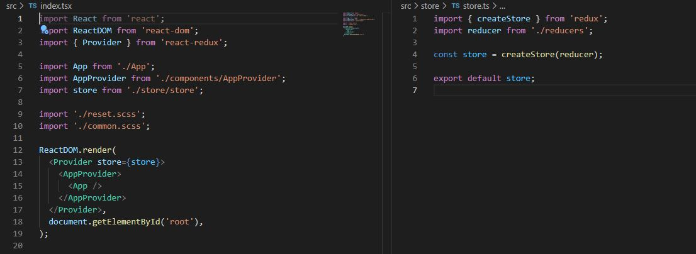

Привет! Наша команда разработчиков в составе Дарьи, Стаса и Анастасии под руководством Дмитрия выполняла разработку клона приложения Netflix.
За основу мы брали исходные страницы netflix.com, стараясь соблюсти исходные стили и функциональность, делали свое приложение.
Для ведения задач использовали доски в Trello. Одна задача могла состоять из одной страницы исходного приложения, либо из одной или нескольких функций со страницы исходного приложения, а также из работ по настройке среды, поиска данных и т.п.
Задачи задавались в рамках недельного спринта.
Навигация осуществляется с помощью библиотеки react-router-dom.
Регистрация, авторизация и аутентификация реализованы через сторонний API: https://nestjs-boilerplate-test.herokuapp.com/api
API подключили с помощью библиотеки axios
Реализована проверка пароля: он не должен специальных символов и пробелов, должен включать буквы латинского алфавита и быть не короче 6 и не длиннее 60 символов.
Данные пользователя хранятся в Session storage.
К сожалению, netflix.com не предоставляет свой API в свободном доступе. Поэтому для получения данных о контенте мы использовали сторонний API: https://api.themoviedb.org/3. Для работы с API также использовали библиотеку axios.
Для подбора фильмов или сериалов реализованы несколько способов:
Передаем ключевые слова в качестве параметра в запрос
Для выбора категории используются кнопки. При нажатии формируется URL для запроса.
Для выбора языка оригинала используется выпадающий список. При выборе того или иного значения формируется объект с параметрами запроса.
Общий результат отбора фильмов или сериалов представлен в виде плиток с постерами и названиями. При клике на плитку осуществляется переход на детальную страницу.
На детальной странице отображается информация о фильме, создателях и актерах, реализован просмотр трейлера из youtube через iframe.
Если ответ возвращается с ошибкой, осуществляется переход на соответствующую страницу.
Реализовано переключение языков RU-EN через использование context
export const AppContext = createContext({} as IAppContextType);
Для контроля за состояния пользователя (log in/log out) используется redux.
Пример использования SASS.
Пример анимации, реализованной через keyframes.
В заключении хотелось бы отметить, что несмотря на то, что наше приложение не получилось полностью в том виде, в котором мы хотели его видеть, мы приобрели очень важный опыт: